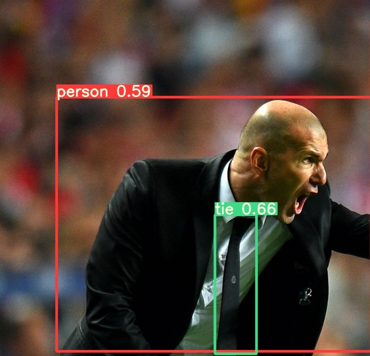

تشخیص اشیا در تصویر با YOLO object detection
تشخیص اشیا یک فناوری کامپیوتری است که در ارتباط با کامپیوتر ویژن و پردازش تصویر است که با شناسایی نمونه هایی از اشیاء
معنایی یک کلاس خاص (مانند انسان ها، ساختمان ها و اتومبیل ها) در تصاویر و فیلم های دیجیتال مورد بررسی قرار می
گیرد.
در واقع در این فناوری ماشین تصویر را میبیند و پس از پردازش هایی مکان اشیا تعریف شده و کلاس یا دسته بندی آنها را نیز
مشخص میکند.
وظایف اصلی بینایی ماشین را میتوان به موارد زیر تقسیم کرد:
- شناسایی یا دستهبندی شیء: در شناسایی شیء، یک تصویر خام را تحویل میگیرید و باید تشخیص دهید که مربوط به کدام دسته
میشود.
- دستهبندی و مکانشناسی: در این حالت شما یک تصویر دارید که فقط یک شیء در آن وجود دارد و باید جای آن شیء را پیدا
کنید. به این کار «مساله مکانشناسی» نیز میگویند.
- پیداکردن شیء: در این حالت شما باید موقعیت شیء در تصویر را پیدا کنید. این اشیا میتوانند از کلاسهای متفاوت
باشند.
- تقسیمبندی تصویر: تقسیمبندی تصویر وظیفه سنگینتری است. در این حالت باید تمام پیکسلها را بر اساس دسته درست آن
پیدا کنید.
این صفحه برای نشان دادن قابلیت تگ map در html طراحی شده است. میتوانید با انتخاب کردن دو object موجود در عکس در مورد آنها اطلاعاتی کسب کنید.
